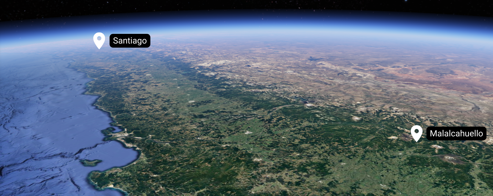
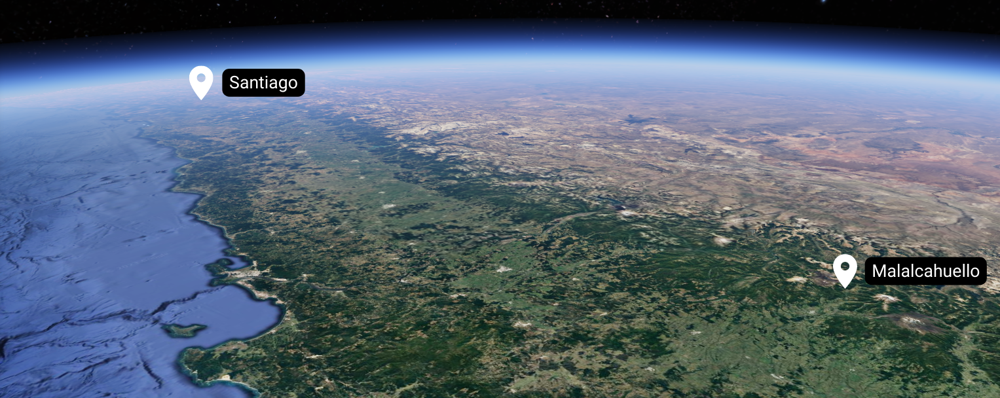

Malalcahuello
 

Malalcahuello está ubicado en la Región de la Araucanía (9na Región - IX), en el sur de Chile, y es un destino ideal para aficionados al deporte outdoor durante todo el año, especialmente para randoneros que buscan conocer nuevos lugares cada invierno. Sus montañas poseen una atmósfera caracterizada por impresionantes paisajes volcánicos y bosques nativos donde se puede observar la Araucaria araucana, un árbol nativo de este lugar del mundo.
A solo 20 minutos de Malalcahuello se encuentra la Reserva Nacional Malalcahuello-Nalcas que alberga al Volcán Lonquimay, y en su base, a Corralco Mountain and Ski Resort, un centro de ski que ha crecido en popularidad, infraestructura y servicios durante la última década. En dirección al sur, Malalcahuello es visto con el Volcán Sierra Nevada a sus espaldas, el cual sobresale en el paisaje con sus 2554m. de altura. Este volcán invita a la exploración más al sur, hacia los límites del Parque Nacional Conguillio, que queda tan solo a 90 minutos en auto. Malalcahuello posee hostales, cabañas, una variada oferta de arriendos en airbnb, hoteles, una completa oferta gastronómica, actividades al aire libre durante todo el año, servicios de arriendo de equipo, agencias de turismo y el acceso por tierra a localidades cercanas como Lonquimay, Icalma y Melipeuco.